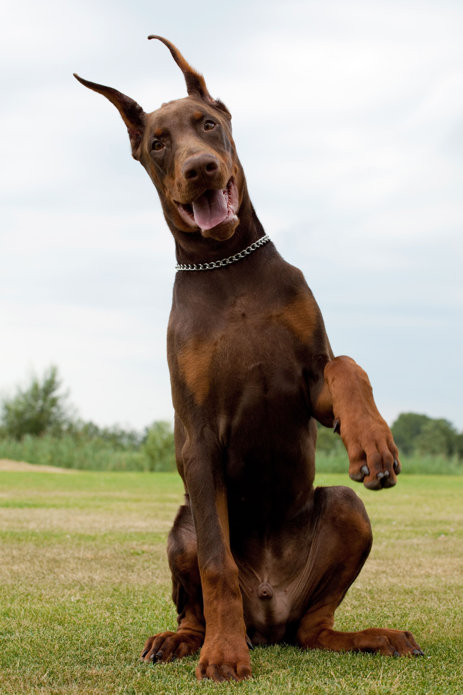

Лабрадор-ретривер
Лабрадо́р-ретри́вер (англ. labrador retriever) — порода собак. Первоначально
была выведена в качестве охотничьей подружейной собаки. Лабрадоры используются на охоте, в качестве
собак-поводырей, собак-спасателей, но главным образом в роли компаньонов. Порода берёт своё начало на
острове Ньюфаундленд на восточном побережье Канады.
Доберман

Доберма́н (нем. dobermann) — порода короткошёрстных служебных собак, выведенная
в Германии, Тюрингии, в городе Апольда в конце XIX века Карлом Фридрихом Луисом Доберманном, названа в честь
своего создателя. Первоначальное название породы — тюрингский пинчер — после смерти Доберманна в 1894 году
было заменено на доберман-пинчер. Во время очередной редакции стандарта в 1949 году из названия породы было
убрано слово «пинчер», и она стала называться просто «доберман». В книге Стенли Корена «Интеллект собак»
включён в группу пород с наилучшими способностями к дрессировке.
Ирландский Волкодав
Ирландский волкодав (англ. irish wolfhound) — порода охотничьих собак. Одна из
самых больших собак в мире. Ирландские волкодавы использовались для травильной охоты на крупную дичь —
волков и оленей. Как и континентальные племена, кельты в Ирландии были заинтересованы в разведении крупных
борзых собак для охоты. Эти большие ирландские борзые могли быть гладко- или жесткошёрстными, но со временем
жесткошёрстные стали преобладать, вероятно, из-за климатических условий Ирландии.